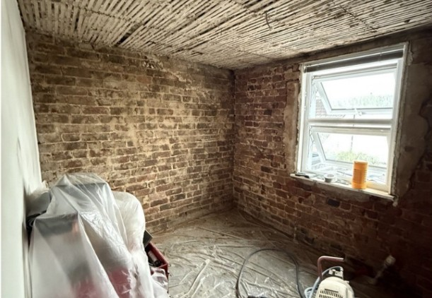

Will it work on my house?
Your solid brick walls have no cavity, so in winter the inside face gets cold enough for the moisture in the room to condense on it. That's the damp and the mould. The modern plaster on top is probably stopping the wall drying out.
Recommended: Breathable internal lining for solid brick
A thin lime-and-perlite render applied to the brick after the existing plaster is taken back. It warms the inside surface so condensation stops forming, and it lets the wall breathe. Typically 25 to 50mm.
What you'd notice
- Wall warm to the touch, not clammy
- Mould stops coming back
- The room heats faster and holds it
A house like yours

Bare brick bedroom wall, Cheltenham, before the breathable lining went on.
Bedroom Renovation, Upper Park Street
A bare-brick bedroom under a retained lath ceiling, lined with 25mm of breathable insulation. Walls lost 46% less heat, the ceiling 38% less.
See the build-up
- PerliScratch: base coat that grips bare brick and evens the wall
- PerliTherm: the insulating lime-perlite render, 25 to 50mm
- PerliFinish: breathable finishing plaster you decorate onto
Architects: download the technical pack
This guide points you in the right direction. A survey confirms the build-up and checks moisture risk.